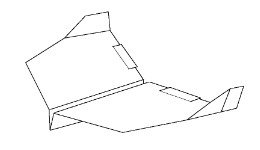

Home Career Information About Us Contact Legacy Aircraft P26 B52 Current Aircraft 737-800 747 Future Aircraft X-37B B-2  B-2 The B-2 was developed in secrecy. Details were first revealed to the public in 1988, and it began test flying the next year. Initial plans for 132 B-2s were scaled back to 21 due to skyrocketing costs Length: 69 ft Wingspan: 172 ft Empty weight: 158,000 lbs Max weight: 336,500 lbs Speed: 560 mph Ceiling: 50,000 ft Range: 6,500 mi